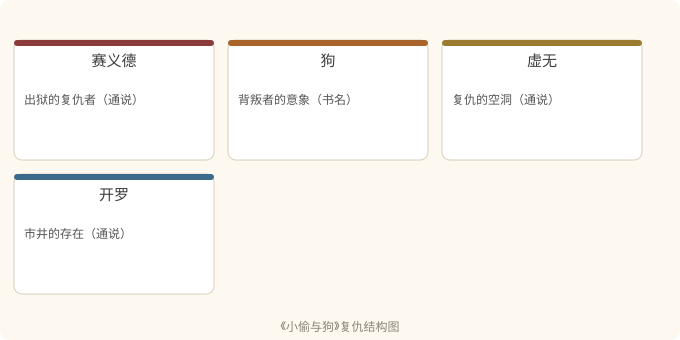

小偷与狗
一、基本信息
| 作者 | 马哈福兹 |
|---|---|
| 成书/出版 | 1961年（作者页注记：Britannica 列举——小偷与狗 (1961)） Naguib Mahfouz — Encyclopaedia Britannica（百科全书） |
| 国别/地区 | 埃及 |
| 时代 | 近代 · 20世纪60年代初 |
| 体裁 | 长篇小说 |
| 语言 | 阿拉伯语 |

《小偷与狗》复仇结构图（主题·结构图）
二、创作背景
作者页注记：小偷与狗——'（Britannica 列举）'。
Britannica：马哈福兹——开罗三部曲之后的转向（作者页语境——待核）。
题材（通说待核）：出狱的贼赛义德对'背叛者'的复仇——存在主义色调。
三、内容脉络
（通说待核）赛义德出狱：妻子改嫁、女儿疏远。
（通说待核）复仇的循环与'狗'的意象。
四、主要人物表
| 人物 | 身份 | 说明 |
|---|---|---|
| 赛义德·马兰 | 出狱的贼 | （通说待核） |
五、主题与艺术特点
- 复仇与虚无（通说待核）。
- '狗'：被背叛者与背叛者（书名语境——通说待核）。
- 开罗市井的存在主义（作者页语境——待核）。
六、影响与评论
- Britannica：小偷与狗 (1961)（作者页注记）。
Naguib Mahfouz — Encyclopaedia Britannica（百科全书） - Britannica：马哈福兹现实主义转向（作者页语境——待核）。
Naguib Mahfouz — Encyclopaedia Britannica（百科全书）
七、阅读建议
难点
- 60年代阿拉伯政治语境。
- 内心独白（意识流——通说待核）。
- 《小偷与狗》中译本（人民文学等——通说待核）。
- 阿拉伯文原版。
马哈福兹'新现实主义'首选。
八、待核实
- 赛义德人名核对（通说）。
- 1961年出版细节待核。
- '意识流'手法说法待核。